Questão 1 · Avaliação da estática f etal · 4000128123Mulher tercigista e secundipara (partos normais). Fez pré-natal adequado e nega alterações em exames laboratoriais. Deu entrada na emergência da Maternidade com 38 semanas de gestação, queixando-se de dor em baixo ventre, apresentando 4 contrações de 40 segundos cada, em intervalo de 10 minutos. Batimento cardíaco fetal: 144bpm. Ao toque vaginal, colo dilatado 9cm, no, bolsa integra, apresentação em +1 de De Lee com Lambda em correspondência com estreito superior da bacia à esquerda e anteriormente. Identifique a apresentação e a variedade de posição fetal.
A Cefálica fletida e occipito esquerda posterior (OEP).
B Cefálica defletida e mento esquerda anterior (MEA).
C Cefálica fletida e occipito esquerda anterior (OEA).
D Cefálica defletida e bregma esquerda anterior (BEA).
Questão 2 · Pontos de ref erência da apresentação f etal · Apresentação · Avaliação da estática f etal · 4000119120A apresentação fetal mostrada na imagem abaixo é?
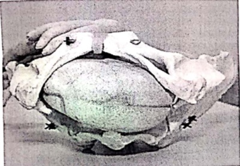
A Occipto esquerda anterior.
B Bregmática.
C Occipto direita posterior.
D Occipto transversa esquerda.
Questão 3 · Posição · Pontos de ref erência da apresentação f etal · Avaliação da estática f etal · 4000114667Durante a condução de um trabalho de parto, ao realizar o toque, o obstetra evidencia apresentação cefálica etida, com lambda fetal em posição 2h em relação aos ponteiros do relógio. Isso significa que o dorso fetal está:
A esquerda anterior.
B esquerda posterior.
C direita anterior.
D direita posterior.
Questão 4 · Def inição dos principais conceitos · 4000108010As relações útero-fetais de nem o posicionamento espacial do concepto no útero e na bacia materna e têm importância fundamental na assistência ao parto. Sobre isso, assinale a alternativa CORRETA.
A Na apresentação pélvica incompleta modo de nádegas, o ponto de reparo e o dorso fetal encontram-se diametralmente opostos.
B Na situação transversa, a bacia materna estará incompletamente ocupada, e o polo cefálico do concepto estará no flanco materno.
C No primeiro oblíquo da bacia obstétrica, encontramos variedades de posições OEA ou ODP nas apresentações cefálicas fletidas.
D As variedades sagitais altas, respectivamente OP e OS, são comumente encontradas nas bacias antropoide e platipeloide.
E O lado materno em que se encontra o dorso fetal define a posição do feto nas apresentações cefálicas e nas pélvicas.
Questão 5 · Variedade de posição · 4000107675Um feto estando em OEA, pode-se dizer que
A a situação é de flexão.
B a apresentação é longitudinal.
C a atitude é anterior.
D a posição é esquerda.
E o assinclitismo é posterior.
Questão 6 · Cef álica · 4000102030O recém-nascido de parto normal que pode apresentar máscara equimótica, nas primeiras horas após o parto, é aquele que durante o trabalho de parto apresentava-se em:
A cefálica fletida.
B defletida de primeiro grau.
C defletida de segundo grau.
D defletida de terceiro grau.
Questão 7 · Estática f etal · 4000098120Em um feto a termo, o diâmetro biparietal tem aproximadamente 9,5 cm, semelhante ao diâmetro:
A Occipitofrontal.
B Occipitomentoniano.
C Suboccipitobregmático.
D Suboccipitofrontal.
Questão 8 · Pélvica · 4000093587Qual o tipo de apresentação pélvica apresentada na figura abaixo?

A Incompleta de nádegas
B Completa de nádegas
C Modo de pés
D Completa padrão
E Incompleta de joelho
Questão 9 · Atitude · 4000054927A relação entre o eixo longitudinal fetal e o da mãe é denominada:
A Posição fetal.
B Apresentação fetal.
C Atitude fetal.
D Insinuação fetal.
E Descida fetal.
Questão 10 · Def inição dos principais conceitos · 4000053041Para descrever e estudar o mecanismo de parto, é necessário conhecer as relações espaciais entre o organismo materno e o produto conceptual, utilizando-se para isso nomenclatura e definições convencionadas. Tal nomenclatura orienta a documentação do parto e a comunicação entre os pro ssionais para que haja, posteriormente, entendimento dos acontecimentos. Analise as relações uterofetais abaixo relacionadas. I - O conceito de atitude reside na relação das diversas partes fetais entre si. II - A situação consiste na relação entre o maior eixo da cavidade uterina e o maior eixo fetal. III - A apresentação é definida como a região fetal que ocupa a área do estreito inferior e nela se vai insinuar. IV - Adota-se a definição de posição fetal, da escola alemã, que a descreve como a relação do dorso fetal com o lado materno. V - A variedade de posição complementa a orientação espacial do concepto ao relacionar um ponto de referência da apresentação fetal com um ponto de referência ósseo da bacia materna, levando-se em consideração as faces anterior, posterior ou lateral da gestante. Estão corretas
A somente I e IV.
B somente I, II e V.
C somente I, II e IV.
D somente I, II, IV e V.
E somente I, II, III e IV.
Questão 11 · Avaliação do estreito superior · 4000046974Quando no toque vaginal, NÃO se consegue atingir o promontório, conclui-se que a bacia da mulher apresenta
A Diâmetro anteroposterior amplo.
B Diâmetro transverso amplo.
C Diâmetro transverso estreito.
D Diâmetro oblíquo amplo.
E Diâmetro oblíquo estreito.
Questão 12 · Apresentação · 4000046115Para a avaliação fetal durante o trabalho de parto, o toque vaginal permite identi car a apresentação fetal e seus pontos de reparo. Em qual dos itens essa correlação está incorreta:
A Cefálica defletida de 1º grau = Ângulo anterior do bregma.
B Cefálica defletida de 3º grau = Queixo.
C Cefálica defletida de 2º grau = Raiz do nariz.
D Cefálica fletida = Lambda.
E Pélvica = Acrômio.
Questão 13 · Pontos de ref erência da apresentação f etal · Cef álica · 4000039734A apresentação, na estática fetal, corresponde ""a região fetal que se loca na área do estreito superior, ocupando-a em seu todo, ai tende a insinuar-se e, durante o trabalho de parto, é sede de mecanismo bem determinado."" (REZENDE, 2013). Na apresentação fetal cefálica etida (vértice ou occipital), o ponto de referência e a linha de orientação respectivamente, são
A acrômio e dorso fetal.
B lambda e sutura sagital.
C bregma e sutura sagitometópica.
D glabela e linha metópica.
Questão 14 · Atitude · Cef álica · 4000025163A linha de orientação na apresentação cefálica fletida é:
A lambda
B bregma
C sutura metópica
D sutura sagital
Questão 15 · Avaliação da estática f etal · 4000025115Paciente de 39 semanas é admitida com queixa de dor em baixo ventre. Ao exame, observam-se 5 contrações em 10 minutos, colo dilatado 9 cm, apresentação cefálica em OEA, plano +1 de De Lee. Podemos afirmar que
A o dorso fetal encontra-se a esquerda.
B o feto apresenta deflexão de 1 grau.
C paciente está em período expulsivo.
D a insinuação ainda não ocorreu.
Questão 17 · Avaliação da estática f etal · 4000001259Qual a nomenclatura obstétrica na figura abaixo?

A OEA
B OEP
C ODP
D ODA
E OTA
Questão 18 · Pontos de ref erência da apresentação f etal · Cef álica · Avaliação da estática f etal · 4000118608Considere a imagem abaixo. Na apresentação fetal cefálica de etida de primeiro grau, o número que mostra o ponto de referência fetal é
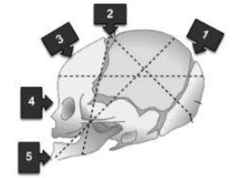
A 5
B 1
C 4
D 3
E 2
Questão 19 · Rotação interna · Variedade de posição · Avaliação da estática f etal · 4000115149Os diagramas abaixo representam variedades de posição do polo cefálico etido durante a evolução do trabalho de parto. Qual das alternativas abaixo define CORRETAMENTE a nomenclatura obstétrica de cada um deles e a ordem da rotação interna fisiológica desde a insinuação até o desprendimento do polo cefálico?

A OS, OEA, OET e A, B, C
B OS, ODA, ODT e B, C, A
C OP, OEA, OET e C, A, B
D OP, ODA, ODT e C, B, A
E OS, OEA, ODT e B, A, C
Questão 20 · Pontos de ref erência da apresentação f etal · Avaliação da estática f etal · 4000114295Você está de plantão na sala de parto e vai avaliar uma paciente multípara, a termo, em trabalho de parto. Ao toque vaginal, você palpa a raiz do nariz do feto e percorre a sutura metópica com a ponta de seu dedo. A dilatação está completa, a bolsa rota, com líquido amniótico claro e com grumos. De acordo com o exame físico pode-se a rmar que se trata de uma apresentação:
A Defletida de 2° grau.
B Defletida de 1° grau.
C Defletida de 3° grau.
D Transversa.
E Córmica.
Questão 21 · Apresentação · Variedade de posição · 4000099433Em avaliação de paciente durante o trabalho de parto, observa-se toque vaginal com dilatação de 8cm, bolsa rôta, apresentação cefálica com bregma em direção à eminência íleopectínea direita. A rma-se que a apresentação é cefálica defletida de:
A 1º grau, bregma direita posterior.
B 1º grau, bregma direita anterior.
C 2º grau, bregma esquerda posterior.
D 2º grau, bregma esquerda anterior.
Questão 22 · Morf ologia da bacia · 4000095903Primigesta de 28 anos apresenta-se em trabalho de parto a termo. Pelvimetria clínica é realizada. Ela tem uma pelve ovalada, com o diâmetro anteroposterior do estreito pélvico maior do que o diâmetro transverso. O feto se encontra em variedade de posição occipito-direita-posterior. Qual o tipo mais provável de pelve?
A Ginecoide.
B Androide.
C Antropoide.
D Platipeloide.
E Androgênica.
Questão 23 · Def inição dos principais conceitos · 4000092077Sobre estática fetal é INCORRETO afirmar que:
A Situação é a relação entre os grandes eixos longitudinais fetal e uterino.
B Apresentação é a região fetal que se localiza na área do estreito superior.
C Atitude é a relação entre as partes fetais que precisa flexionar-se para ajustar seu comprimento ao continente uterino.
D A altura da apresentação está insinuada quando ocupa a área do estreito superior.
E Posição fetal é a relação do dorso fetal com o lado materno, podendo ser descrita como primeira ou segunda posição.
Questão 24 · Def inição dos principais conceitos · 4000083122Analise as figuras abaixo: I. Na figura I, a situação é longitudinal e a apresentação é pélvica completa. II. Na figura II, a apresentação é cefálica defletida de 3º grau ou de face. III. Na figura III, a situação é transversa e a via de parto sempre será cesariana. IV. Na figura I, a atitude fetal é de flexão e a posição fetal é esquerda. Quais estão corretas?
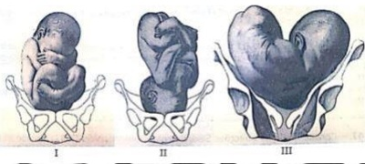
A Apenas I e II.
B Apenas III e IV.
C Apenas I, II e III.
D Apenas II, III e IV.
Questão 25 · Def inição dos principais conceitos · 4000080994Nas apresentações de vértice, a cabeça se ete gradualmente, substituindo seus maiores diâmetros por outros menores, tal como:
A suboccipitobregmático 10,5 cm
B occipofrontal 11 cm
C suboccipitofrontal 11 cm
D occipitomentoniano 11 cm
Questão 26 · Estreito superior · 4000080975Conhecer o trajeto através do qual se dará o parto transpélvico é fundamental. Chama-se conjugata vera anatômica a medida cujo traçado vai:
A do promontório à face posterior do púbis
B do promontório à borda superior da sínfise púbica
C da linha inominada ao promontório
D da eminência íleopectínea ao promontório
Questão 27 · Cef álica · 4000078927Uma apresentação cefálica de fronte ou defletida de segundo grau demonstra
A extensão parcial da cabeça e ponto de referência fetal: naso ou raiz do nariz
B flexão parcial da cabeça e ponto de referência fetal: bregma ou grande fontanela
C extensão total da cabeça e ponto de referência fetal: mento
D flexão total da cabeça e ponto de referência: occipício ou pequena fontanela
Questão 28 · Cef álica · 4000068406Assinale a alternativa que corresponde a um deflexão de terceiro grau.
A Assinclitismo anterior
B Assinclitismo posterior
C Apresentação de face
D Apresentação de bregma
E Apresentação de fronte
Questão 29 · Estática f etal · 4000068399Em apresentação cefálica defletida de primeiro grau, o diâmetro de insinuação é:
A occípito-frontal.
B suboccípito-bregmático.
C suboccípito-frontal.
D submento-bregmático.
E suboccípito-mentoniano.
Questão 30 · Ausculta batimentos cardíacos f etais BCF · Variedade de posição · 4000049906Parturiente a termo, ao toque, revela tratar de uma variedade de posição SEA (variedade de posição). Qual o quadrante uterino no qual se auscultam melhor os batimentos do coração-fetal?
A Superior direito
B Superior esquerdo
C Inferior direito
D Inferior esquerdo
E Em torno da cicatriz umbilical
Questão 31 · Pontos de ref erência da apresentação f etal · Insinuação · 4000049002Uma mulher está em trabalho de parto com feto em apresentação cefálica, de etida de primeiro grau, com ponto de referência voltado para a iminência iliopectínea esquerda. Com base nesse caso hipotético, assinale a alternativa que apresenta, correta e respectivamente, o diâmetro de insinuação fetal e a variedade de posição.
A subocciptofrontal e BEP
B occiptofrontal e BEA
C subocciptobregmático e BEA
D submentobregmático e BEP
E occiptomentoneiro e BEP
Questão 32 · Cef álica · 4000038636No mecanismo do trabalho de parto, o maior diâmetro do crânio fetal é o occípito mentoniano, que corresponde à apresentação
A defletida de segundo grau.
B fletida.
C defletida de primeiro grau.
D defletida de terceiro grau.
Questão 33 · Pontos de ref erência da apresentação f etal · Apresentação · 4000028310A linha de orientação na apresentação cefálica fletida é:
A lambda
B bregma
C sutura metópica
D sutura sagital
Questão 34 · Pélvica · Situação · Avaliação da estática f etal · 4000028297Ao examinar a parturiente, o interno relatou que o maior eixo fetal coincidia com o maior eixo uterino. O dorso fetal era palpado à esquerda do abdome materno, e a escava não estava completamente ocupada. Então, definiu, nessa ordem:
A atitude, situação e apresentação do concepto (esta última, cefálica fletida não insinuada)
B situação, posição e apresentação do concepto (esta última, pélvica)
C situação, variedade de posição e apresentação do concepto (esta última, córmica)
D atitude, situação e variedade de posição do concepto (esta última, occipitoesquerda anterior)
Questão 35 · Situação · Apresentação · Avaliação da estática f etal · 4000026925Analise a imagem a seguir. Na ilustração, o feto encontra-se em:
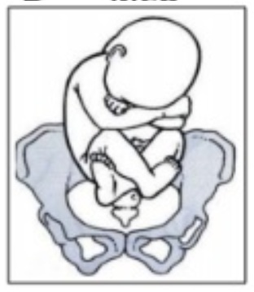
A Situação pélvica e apresentação longitudinal.
B Situação longitudinal e apresentação pélvica.
C Situação longitudinal e apresentação cefálica.
D Situação cefálica e apresentação longitudinal.
Questão 36 · Cef álica · 4000024132Durante o trabalho de parto, o feto realiza movimento de exão visando substituir diâmetros maiores por menores, facilitando assim o mecanismo de parto. O maior e o menor diâmetro da cabeça fetal são respectivamente:
A Occipitofrontal e occipitomentoniano.
B Occipitomentoniano e suboccipitobregmático.
C Occipitofrontal e occipitobregmático.
D Suboccipitofrontal e suboccipitobregmático
Questão 37 · Cef álica · 4000021414O maior diâmetro da cabeça fetal normal é o:
A biparietal
B bitemporal
C occipitofrontal
D suboccipitobregmático
E occipitomentoniano
Questão 38 · Avaliação do estreio inf erior · 4000011807Em uma pelvimetria interna ao toque, a melhor bacia para progressão de parto normal é:
A Ângulo subpubico maior que 90 graus, espinhas planas, promontório inatingível.
B Ângulo subpubico menor que 90 graus, espinhas planas, promontório inatingível.
C Ângulo subpubico maior que 90 graus, espinhas salientes, promontório inatingível.
D Ângulo subpubico menor que 90 graus, espinhas planas, promontório saliente.
Questão 39 · Cef álica · 4000003768Você está de plantão quando é chamado para atender a uma paciente levada pelos vizinhos com queixa de contração há mais ou menos cinco horas. Refere que a contração cou mais frequente na última hora. Primigesta, com 24 anos de idade. Trouxe o cartão de pré-natal informando que realizou 10 consultas, tomou todas as vacinas e realizou todos os exames de rotina. Não houve intercorrência durante a gestação. Idade Gestacional pela Data da Última Menstruação: 37 semanas 2/7 e Idade Gestacional pela primeira USG realizado na 8ª semana: 38 semanas 2/7. Nas apresentações cefálicas, na maioria das vezes, o mento se aproxima do externo, o que constitui apresentação?
A Defletida de 1º grau.
B Defletida de 2º grau.
C Defletida de 3º grau.
D Cefálica fletida.
Questão 40 · Avaliação da estática f etal · 4000001150O ponto de referência da apresentação cefálica defletida de segundo grau é?
A Lambda
B Bregma
C Glabela
D Mento
Questão 41 · Avaliação da estática f etal · 4000127857Na apresentação fetal, em relação aos pontos de referência e linhas de orientação, marque V para as a rmativas verdadeiras e F para as falsas. ( ) Na apresentação cefálica fletida, o ponto de referência fetal é o lâmbda e a sutura de orientação é a sutura sagital. ( ) Na apresentação cefálica de etida de primeiro grau, o ponto de referência é a glabela e a linha de orientação é a sutura sagitometópica. ( ) Na apresentação cefálica defletida de terceiro grau, o ponto de referência é o mento e a linha de orientação, a facial. ( ) Na apresentação córmica, o ponto de referência é o acrômio e a linha de orientação é o dorso. Assinale a sequência correta.
A V, F, V, V
B V, F, F, V
C F, V, V, F
D F, V, F, F
Questão 42 · Avaliação da estática f etal · 4000127579No trabalho de parto, na apresentação:
A Defletida de 2° grau, o ponto de referência fetal é a glabela.
B Bregmática, a linha de orientação é a sutura metópica.
C Facial, o ponto de referência fetal é o bregma.
D Pélvica incompleta, também denominada pelvipodálica, as coxas e as pernas estãofletidas.
E Pélvica, a linha de orientação é o sulco interglúteo e o ponto de referência fetal a pube.
Questão 43 · Pontos de ref erência da apresentação f etal · Cef álica · Avaliação da estática f etal · 4000118427A imagem mostra um feto em apresentação cefálica
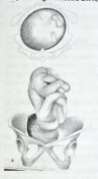
A Fletida completa.
B Defletida de 1º grau.
C Defletida de 2º grau.
D Defletida de 3º grau.
Questão 44 · Pelvimetria · Bacia obstétrica trajeto duro · 4000110066A bacia ou pelve é o canal ósseo do parto constituída pelos ilíacos, sacro e cóccix com as respectivas articulações (sín se púbica, sacro-ilíacas e sacro-coccígea). A seu respeito pode-se afirmar que:
A O plano do estreito inferior divide a pelve em grande e pequena bacia ou escavação, essa última o verdadeiro trajeto duro do parto.
B Os diâmetros mais importantes da pequena bacia são o diâmetro biespinha (24 cm), bicrista (28 cm), sacropúbico externo ou Baudelocque (20 cm).
C Há 4 tipos fundamentais de bacia: ginecoide (feminina, 50%), antropoide (dos macacos, 25%), androide (masculina, 20%) e platipeloide (achatada, 5%).
D Os eixos da bacia são paralelos ao centro de cada plano. Têm grande valor para auxiliar o obstetra sobre a direção a dar às trações, como, por exemplo, na extração a fórcipe.
E A radiopelvimetria, pelos seus benefícios, pode ser realizada nas últimas semanas da gravidez, para se obter as dimensões da bacia.
Questão 45 · Def inição dos principais conceitos · 4000109159Para se acompanhar um trabalho de parto, o médico deve conhecer os pontos de referência fetais e maternos e as relações uterofetais. Em relação a esses conceitos, é correto afirmar que
A as apresentações cefálicas fletidas têm o bregma com ponto de referência.
B nas variedades em ODP, o ponto de referência fetal se relaciona com a iminência ileopectina direita materna.
C os fetos com dorso à direita mantém seus pontos de referência sempre do lado direito.
D os fetos em apresentação pélvica completa, em SEA apresentam o dorso do lado esquerdo.
E nas apresentações defletidas de terceiro grau, o ponto de referência fetal, nasio, apresenta-se mais frequentemente nas esquerdas anteriores.
Questão 46 · Estática f etal · 4000106042No mecanismo do trabalho de parto, o maior diâmetro do crânio fetal é:
A Occipito-frontal.
B Suboccípito bregmático.
C Occípito mentoniano.
D Suboccípito frontal.
Questão 47 · Situação · 4000103067No final da gestação qual a situação fetal mais comum?
A Córmica.
B Transversa.
C Cefálica.
D Longitudinal.
Questão 48 · Variedade de posição · 4000098231Na evolução de um parto por via vaginal, diagnosticou-se a variedade de posição occipitossacra. A cabeça, que já está fletida, acentua-se a flexão e é exposta primeiramente:
A Lambda
B Bregma
C Astérios
D Ptérios
Questão 49 · Variedade de posição · 4000088391Ao examinar uma parturiente com 37 semanas de gestação, o obstetra percebe que o colo uterino está dilatado para 8 cm, a bolsa está rota e ele identi ca estruturas como nariz, lábios e queixo, este apontando para a eminência ileopectínea esquerda. A descrição correta dessa variedade de posição é
A Mento Direita Anterior.
B Mento Direita Transversa.
C Mento Esquerda posterior.
D Mento Esquerda Anterior.
Revisar: possível letra faltando em enunciado
Questão 50 · Estática f etal · 4000083932Em relação aos diâmetros fetais no termo, pode-se afirmar que o de maior extensão é o:
A Occipto-frontal.
B Submento-bregmático.
C Suboccípito-bregmático.
D Occípito-mentoneiro.
E Submento-bregmático
Questão 51 · Def inição dos principais conceitos · 4000082830Considerando a imagem apresentada, analise as assertivas abaixo: I. A apresentação fetal é cefálica. II. A situação fetal é longitudinal. III. A variedade de posição é Occípito Esquerda Anterior (OEA). IV. A altura da apresentação está no plano zero De Lee. Quais estão corretas?
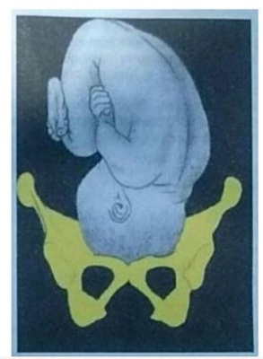
A Apenas I e II.
B Apenas I e III.
C Apenas II e IV.
D Apenas I, II e III.
E I. II. III e IV.
Questão 52 · Cef álica · 4000077734A apresentação fetal é definida como a região fetal que se apresenta na área do estreito superior. A variedade de posição refere-se à relação entre os pontos de referências maternos e fetais. Nos casos de apresentação cefálica de etida de primeiro grau, o ponto de referência fetal utilizado para identificar a variedade de posição da apresentação é o (a):
A Mento
B Bregma
C Glabela
D Occipito
E Lambda
Questão 53 · Pélvica · 4000044096Apresentação pélvica agripina corresponde à(a)
A Completa.
B Pélvico-Podálica.
C Modo de pés.
D Modo de joelhos.
E Modo de nádega.
Questão 54 · Atitude · 4000038273Durante o trabalho de parto, no toque vaginal, sente-se como referência a fronte fetal. Portanto, a apresentação é:
A occipitoposterior.
B em assinclitismo anterior.
C em assinclitismo posterior.
D defletida de 2° grau.
Questão 55 · Variedade de posição · Avaliação da estática f etal · 4000035548A variedade de posição OEA significa:
A Apresentação cefálica, ponto de referência lambda, e está em correspondência com o estreito superior à direita e anteriormente.
B Apresentação cefálica, ponto de referência lambda, e está em correspondência com o estreito superior à esquerda e anteriormente.
C Apresentação cefálica, ponto de referência bregma, e está em correspondência com o estreito superior à esquerda e anteriormente.
D Apresentação cefálica, ponto de referência bregma, e está em correspondência com o estreito superior à direita e anteriormente.
Questão 56 · Estreito superior · Avaliação do estreito superior · 4000035528Na avaliação pelo toque vaginal, qual conjugata é avaliada para estimar o diâmetro da conjugata obstétrica na pelvimetria clínica:
A Conjugata anatômica.
B Conjugata exitus.
C Conjugata diagonalis.
D Conjugata bi- espinha isquiática.
Questão 57 · Situação · Apresentação · 4000029558Na situação transversa, a apresentação fetal pode ser:
A Acrômio direita anterior.
B Occipito esquerda anterior.
C Occipito esquerda transversal.
D Sacral direita posterior.
E Occipitopúbica.
Questão 58 · Estática f etal · 4000003496Adolescente, 14 anos, primigesta com 38 semanas e 3 dias de gestação deu entrada na Maternidade Balbina Mestrinho com queixa de dor há 12 horas com piora há 4 horas. Dinâmica uterina presente, 3 contrações em 10 minutos, movimentos fetais presentes, AU = 35 cm, AF = 146 bpm, rítmico. Bolsa íntegra. Ao toque: colo no, centralizado, pérvio para 8,0 cm, +1 de De Lee, AF = 141 bpm, rítmico. Em relação aos diâmetros fetais no termo, qual o de maior extensão?
A Occipitomentoniano.
B Suboccipitobregmático.
C Submentobregmático.
D Occipitofrontal.
Questão 59 · Morf ologia da bacia · 4000001835Primigesta de 28 anos apresenta-se em trabalho de parto a termo. Pelvimetria clínica é realizada. Ela tem uma pelve ovalada, com o diâmetro ântero-posterior do estreito pélvico maior do que o diâmetro transverso. O feto se encontra em variedade de posição occipito-direita-posterior. Qual é o tipo mais provável de pelve?
A Ginecoide.
B Androide.
C Antropoide.
D Platipeloide.
E Androgênica.
Questão 60 · Posição · Situação · 4000124406Na apresentação cefálica defletida, com mento na posição transversa direita, qual a situação e a posição fetal?
A Longitudinal, esquerda.
B Longitudinal, posterior.
C Longitudinal, direita.
D Longitudinal, anterior.
E Transversa, direita.
Questão 61 · Posição · Situação · Apresentação · 4000118441Durante a realização da primeira manobra de Leopold-Zweifel, foi observado polo fetal volumoso, de superfície resistente, móvel. A segunda manobra revelou presença de pequenas partes orientadas para o lado direito materno. Na terceira manobra, foi apreendido um polo menor do que o inicial, liso e consistente. Com esses achados, conclui-se que a situação, a apresentação e a posição fetais são, respectivamente:
A Frontal, face, inferior.
B Oblíqua, pélvica, direita.
C Sagital, vértice, posterior.
D Transversa, córmica, superior.
E Longitudinal, cefálica, esquerda.
Questão 62 · Palpação obstétrica manobras de LeopoldZweif el · Avaliação da estática f etal · 4000109746Durante a palpação obstétrica, você identi ca a escava vazia, polo cefálico à direita e dorso anterior. Pode-se a rmar que o feto está em:
A Situação transversa, atitude córmica e sigla usada é AD A.
B Situação transversa, apresentação córmica e a sigla usada é AD A.
C Apresentação transversa, atitude córmica e a sigla usada é AEP.
D Apresentação transversa, situação anterior e a sigla usada é AEA.
Revisar: possível letra faltando em enunciado
Questão 65 · Estática f etal · 4000102186Durante o trabalho de parto, o mecanismo de exão é o movimento que visa substituir diâmetros maiores por menores, visando a passagem do feto através da bacia materna. Dos listados abaixo, aponte a alternativa que representa o MENOR diâmetro da cabeça fetal:
A Occipitomentoniano.
B Occipitofrontal.
C Suboccipitobregmático.
D Suboccipitofrontal.
Questão 66 · Descida · Variedade de posição · 4000100805Se, no trabalho de parto, a gestante estiver com feto em OET, em +3 de DeLee, pode-se entender que:
A O lambda se encontra em relação à sinostose sacroilíaca E da mãe.
B O bregma se encontra em relação ao diâmetro transverso à D da mãe.
C O biparietal se encontra 3 cm abaixo da espinha isquiática.
D O hipomóclio deverá se realizar no diâmetro transverso da bacia.
Questão 67 · Assinclitismo · 4000091355Que diagnóstico, dentre os abaixo, pode ser estabelecida com base na figura?
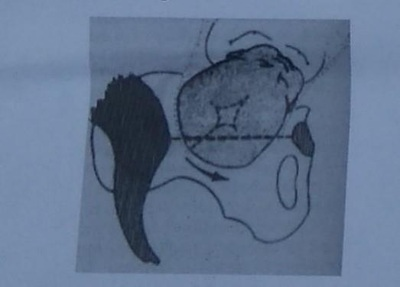
A Assinclitismo posterior.
B Assinclitismo anterior.
C Variedade de posição frontal direita transversa.
D Variedade de posição occipital direita anterior.
E Variedade de posição occipital direita transversa.
Questão 68 · Situação · Variedade de posição · 4000091292Assinale a alternativa que completa, correta e respectivamente as lacunas da frase. O feto está encaixado em apresentação pélvica, em situação ............ e a variedade de posição é sacroposterior.......... .
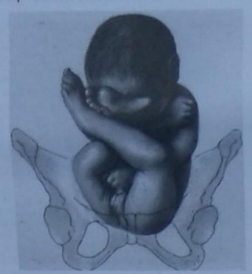
A Longitudinal - direita.
B Longitudinal - esquerda.
C Transversa - direita.
D De nádegas - esquerda.
E De nádegas - direita.
Questão 69 · Def inição dos principais conceitos · Avaliação da estática f etal · 4000074816Uma primigesta encontra-se em trabalho de parto, normotensa, com gestação de termo. Ao exame obstétrico, apresenta AU de 34 cm, apresentação cefálica, com foco audível à esquerda com 144 bpm. A dinâmica uterina é de 2 contrações de média intensidade com 40 segundos de duração. Ao toque, o colo encontra-se medianizado, no, pérvio para 2 cm, bolsa íntegra, apresentação cefálica. Frente a essas informações, considerando as condições que têm maior frequência, seria possível avaliar a apresentação, posição e variedade de posição? Sendo possível, como será essa representação?
A Não é possível avaliar com 2 cm de dilatação.
B Sim, em OEA.
C Sim, em OEP.
D Sim, em ODA.
E Sim, em ODP.
Questão 70 · Atitude · 4000058813A relação entre o eixo longitudinal fetal e o da mãe é denominada:
A Posição fetal
B Apresentação fetal
C Atitude fetal
D Insinuação fetal
E Descida fetal
Questão 71 · Pontos de ref erência da apresentação f etal · Cef álica · 4000054154Na apresentação cefálica fletida, ao exame do toque vaginal identifica-se:
A Mento e boca.
B Sutura sagital e mento.
C Fontanela lambidoide e occípito.
D Nariz e glabela.
E Sutura sagital e glabela.
Questão 72 · Pontos de ref erência da apresentação f etal · Cef álica · 4000054077A linha de orientação e o ponto de referência nas apresentações cefálicas defletidas de 1° grau são, respectivamente:
A Sutura metópica e fronte.
B Sutura sagitometópica e bregma.
C Sutura sagital e bregma.
D Sutura metópica e bregma.
E Sutura occiptobregma.
Questão 73 · Estreito superior · Avaliação do estreito superior · 4000050941O diâmetro traçado do bordo superior da sínfise púbica ao promontório, denomina- se:
A Conjugata vera obstétrica.
B Conjugata anatômica.
C Conjugata diagonalis.
D Diâmetro mínimo.
E Todas estão corretas.
Questão 74 · Def inição dos principais conceitos · 4000046953Para descrever e estudar o mecanismo de parto, é necessário conhecer as relações espaciais entre o organismo materno e o produto conceptual, utilizando-se para isso nomenclatura e definições convencionadas. Tal nomenclatura orienta a documentação do parto e a comunicação entre os pro ssionais para que haja, posteriormente, entendimento dos acontecimentos. Quanto às relações útero-fetais abaixo relacionadas, assinale aquela que contém o conceito INCORRETO:
A O conceito de atitude reside na relação das diversas partes fetais entre si.
B A situação consiste na relação entre o maior eixo da cavidade uterina e o maior eixo fetal.
C A apresentação é definida como a região fetal que ocupa a área do estreito inferior e nela se vai insinuar.
D Adota-se a definição de posição fetal, da escola alemã, que a descreve como a relação do dorso fetal com o lado materno.
E A variedade de posição complementa a orientação espacial do concepto ao relacionar um ponto de referência da apresentação fetal com um ponto de referência ósseo da bacia materna, levando-se em consideração as faces anterior, posterior ou lateral da gestante.
Questão 75 · Avaliação da estática f etal · 4000045624As guras abaixo demonstram a evolução de trabalho de parto de uma gestação com apresentação cefálica no primeiro tempo do mecanismo de parto. Qual é, respectivamente, a situação, a posição, a variedade de posição, o ponto de referência fetal, e quantos graus a cabeça precisa rodar para ocorrer o nascimento?
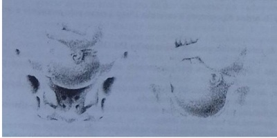
A Cefálica, longitudinal, OET, pequena fontanela, 90°.
B Longitudinal, cefálica, ODT, bregma, 45°.
C Pélvica, longitudinal, esquerda, OSD sacro, 90°.
D Transversa, direita, ODA, bregma, 180°.
E Longitudinal, esquerda, OET, pequena fontanela, 90°.
Questão 76 · Variedade de posição · 4000042803Variedade de posição, em obstetrícia, é a
A relação das diversas partes fetais entre si.
B relação entre a apresentação e o estreito superior da bacia.
C relação entre a apresentação e o estreito inferior da bacia.
D relação entre o ponto de referência fetal e o ponto de referência da pelve materna.
E relação entre o lado materno e o dorso fetal.
Questão 77 · Variedade de posição · Avaliação da estática f etal · 4000041475A seguinte imagem corresponde a qual variedade de posição?
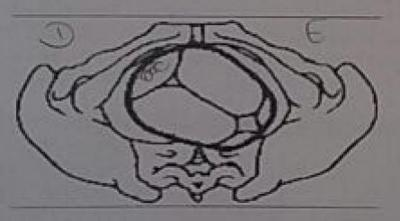
A OEA.
B ODA.
C BEA.
D OP.
Questão 78 · Avaliação da estática f etal · 4000039995As relações de um feto em Occipto Esquerda Anterior (OEA) assinale (F) falso ou (V) verdadeiro: I. A apresentação é longitudinal.; II. O dorso está à esquerda.; III. A posição é cefálica.; IV. As nádegas estão no fundo do útero.
A F, V, F, V.
B V, F, V, F.
C F, V, F, F.
D F, F, V, V.
Questão 79 · Estática f etal · 4000037241Para entender o mecanismo de parto, é necessário conhecer as relações espaciais entre o organismo materno e o produto conceptual. Assinale a nomenclatura CORRETA:
A A atitude fetal consiste na relação entre o maior eixo da cavidade uterina e o maior eixo fetal
B Apresentação é a região fetal que ocupa a área do estreito inferior da bacia materna e só pode ser definida durante o trabalho de parto.
C Posição fetal é a relação do dorso fetal com a bacia materna.
D Variedade de posição relaciona um ponto de referência ósseo da apresentação fetal com um ponto de referência ósseo da bacia materna.
Questão 80 · Estreito superior · Avaliação do estreito superior · 4000035026Sobre os diâmetros do estreito superior da bacia, é VERDADEIRO afirmar:
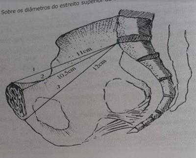
A O diâmetro1 Corresponde à conjugata obstétrica ou Vera obstétrica.
B O diâmetro 2 corresponde à conjungata anatômica ou Vera anatômica.
C O diâmetro 3 corresponde à conjungata diagonal ou diagonalis.
D O diâmetro 2 corresponde à conjungata diagonal ou diagonalis.
E O diâmetro3 Corresponde à conjugata obstética ou Vera obstétrica.
Questão 81 · Variedade de posição · 4000019683Segundo os autores franceses (seguido pelos latinos) a variedade de posição mais frequente no mecanismo do parto é:
A Direita anterior (ODA)
B Esquerda posterior (OEP)
C Esquerda anterior (OEA)
D Direita posterior (ODP)
Questão 82 · Avaliação da estática f etal · 4000003110Parturiente encaminhada para HUPAA em trabalho de parto. Durante exame observou-se dilatação 7 cm, linha de orientação a sutura sagito-metópica e o ponto referência ao toque encontra-se próximo a iminência iliopectínea à direita. Diante desse quadro, é CORRETO afirmar:
A O feto encontra-se cefálico e fletido.
B O feto encontra-se defletido primeiro grau.
C O feto encontra-se cefálico e defletido terceiro grau.
D O feto encontra-se defletido segundo grau e variedade posição bda.
E A variedade da posição observada foi certamente OD A (Occipito Direita Anterior).
Questão 83 · Def inição dos principais conceitos · 4000125210Ao examinar a parturiente, o interno relatou que o maior eixo fetal coincidia com o maior eixo uterino. O dorso fetal era palpado à esquerda do abdome materno e a escava não estava completamente ocupada. Então, definiu, nessa ordem:
A Atitude, situação e apresentação do concepto (esta última, cefálica fletida nãoinsinuada).
B Situação, posição e apresentação do concepto (esta última, pélvica).
C Situação, variedade de posição e apresentação do concepto (esta última, córmica).
D Atitude, situação e variedade de posição do concepto (esta última, occipito-esquerda-anterior).
E Atitude, posição e variedade de posição, pois a apresentação fetal só poderia serreconhecida pelo toque vaginal.
Questão 84 · Pontos de ref erência da apresentação f etal · Apresentação · Avaliação da estática f etal · 4000115734Durante o exame de uma paciente em trabalho de parto, você identi ca o acrômio como ponto de referência. Trata-se de uma apresentação:
A Cefálica, defletida de 2º grau.
B Cefálica fletida.
C Pélvica.
D Córmica.
E Cefálica, defletida de 3º grau.
Revisar: possível letra faltando em enunciado
Questão 85 · Bacia obstétrica trajeto duro · Morf ologia da bacia · 4000083199Com relação à anatomia da pelve feminina, assinale aquela que for verdadeira.
A A bacia ou pelve é dividida em pelve maior e pelve menor, separadas pela linha terminal, uma margem óssea encurvada que vai do promontório (articulação da quinta vértebra lombar com a primeira sacral) até a margem superior da sínfise púbica.
B No estudo dos diâmetros da bacia, a pelve é considerada dividida em bacia maior e menor. Do ponto de vista obstétrico para a avaliação da via de parto é necessário apenas o conhecimento das dimensões da bacia maior.
C A pelvigrafia interna avalia o ângulo sub púbico, também denominado arcada púbica ou arco sub púbico. Anatomicamente, representa o ápice do triângulo anterior do estreito inferior.
D Segundo Caldwell e Moloy (1933) há três tipos de bacia, classificados com base na forma do estreito superior: ginecóide, andróide e platipelóide.
E O osso ilíaco é constituído pela fusão de dois ossos (ílio e isquio) em um processo que se completa entre os 5 e 6 anos.
Questão 86 · Situação · 4000082843Qual a situação fetal na figura?
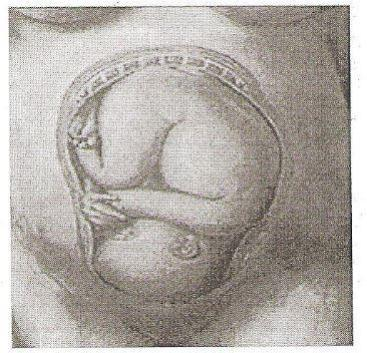
A Cefálica.
B Transversa.
C Longitudinal.
D Oblíqua
E Córmica.
Questão 87 · Estática f etal · 4000080056O maior diâmetro da cabeça fetal é o:
A Occipitomentoniano
B Biparietal
C Occipitofrontal
D Bitemporal
E Suboccipitobregmático
Questão 88 · Def inição dos principais conceitos · 4000071418Em relação à estática fetal, a afirmação correta é:
A Atitude fetal, situação logitudinal, apresentação cefálica fletida, posição dorso à direita, variedade de posição occípito-ilíaca direita posterior.
B Atitude fetal, situação transversa, apresentação cefálica córmica, posição dorso inferior, variedade de posição espádua-ilíaca direita anterior.
C Atitude fetal situação transversa, apresentação cefálica fletida, posição dorso à esquerda, variedade de posição occípito-ilíaca esquerda anterior.
D Atitude fetal, situação longitudinal, apresentação cefálica defletida de primeiro grau, posição dorso à direita variedade de poisção occípito-ilíaca esquerda anterior
Questão 89 · Antropoide · 4000061148Qual é o tipo de bacia que apresenta maior chance para que a insinuação ocorra em apresentações ântero-posteriores?
A Mista.
B Antropoide.
C Ginecoide.
D Androide.
E Platipeloide.
Questão 90 · Avaliação do estreito superior · 4000059827No exame obstétrico da bacia, qual diâmetro deverá ser examinado pelo tocólogo para avaliação do estreito superior?
A Conjugata diagonalis.
B Conjugata anatômica.
C Conjugata vera obstétrica.
D Conjugata exitus.
Questão 91 · Avaliação da estática f etal · 4000045745Em relação à estática fetal da figura abaixo (VER IMAGEM), qual a situação, posição, apresentação e variedade deposição do feto na figura?
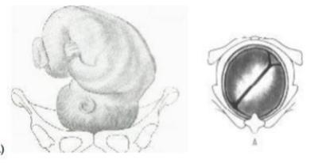
A Longitudinal, direita, cefálica e ODA.
B Longitudinal, esquerda, cefálica e OEA.
C Longitudinal, direita, cefálica e OEA.
D Longitudinal, direita, cefálica e ODP.
E Longitudinal, esquerda, cefálica e OEP.
Questão 92 · Def inição dos principais conceitos · 4000045656Na estática fetal, analisam-se as relações do produto conceptual com a bacia e o útero maternos. Em relação a esses conhecimentos, marque a INCORRETA.
A A apresentação pélvica pode ser completa (ou pelvipodálica) ou incompleta (modo de nádegas).
B Situação é a relação do dorso fetal com o lado materno.
C Variedade de posição é a relação de pontos de referência fetais e maternos. A variedade de posição mais comum é a occipito-esquerda anterior (OEA), onde o lâmbda se relaciona com a eminência ileopectínea esquerda materna.
D A apresentação é a relação do segmento fetal que se relaciona com a bacia materna, que pode ser avaliada pelo exame físico (palpação ou toque vaginal) ou exame ultrassonográfico.
E Para expressar a altura da apresentação, adotamos o critério de De Lee, considerando- se o diâmetro biespinha ciática ou linha interespinhosa como plano zero.
Questão 93 · Antropoide · 4000040048Que tipo de bacia favorece as variedades de posição OS e OP durante a insinuação no trabalho de parto?
A Antropoide
B Ginecoide
C Androide
D Platipeloide
Questão 94 · Avaliação da estática f etal · 4000026688Dizer que a apresentação fetal está em "oea" significa:
A O feto está na 1ª posição e a apresentação é cefálica de vértice.
B O feto está em situação transversal.
C A posição fetal é à direita.
D O feto está na 2ª posição.
E A apresentação fetal é de face.
Questão 95 · Pontos de ref erência da apresentação f etal · Insinuação · 4000022869Durante o trabalho de parto, na apresentação cefálica, a variedade de posição mais frequentemente percebida ao toque é a:
A Occípito esquerda anterior (OEA).
B Occípito esquerda posterior (OEP).
C Occípito direita posterior (ODP).
D Occípito direita anterior (ODA).
Questão 96 · Estreito superior · Bacia obstétrica e pelvimetria · 4000005651Com relação à pelve feminina, assinale a alternativa incorreta:
A O estreito superior da pequena bacia é delimitado por uma linha imaginária que vai da borda superior da sínfise púbica ao promontório.
B No estreito superior da pequena bacia, o diâmetro transverso é menor que o ântero- posterior.
C Durante a passagem do feto pelo canal de parto, o segmento mais difícil é o pólo cefálico.
D É constituída de partes ósseas, músculos e aponeuroses.
E Ao examinarmos uma bacia, durante o exame de toque, os pontos que devemos observar são o promontório, as espinhas ilíacas e o ângulo sub-púbico.
Questão 97 · Avaliação da estática f etal · 4000001087Sobre a imagem apresentada, analise as assertivas: I. A atitude fetal é de flexão. II. A situação fetal é cefálica. III. Em relação à variedade de posição, trata-se de um OEA. IV. Nesta imagem, está formalmente indicada uma cesárea. V. O plano de De Lee é o +4. Indique a alternativa CORRETA. (VER IMAGEM)
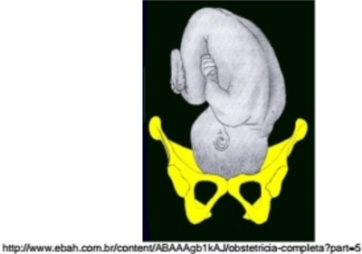
A Somente as assertivas I e II estão corretas.
B Somente as assertivas I, II e III estão corretas.
C Somente as assertivas I e III estão corretas.
D Todas as assertivas estão corretas.
E Todas as assertivas estão erradas.
Questão 98 · Tempos da apresentação cef álica · Variedade de posição · 4000125296Na variedade de posição conhecida como O.E.A.:
A o ponto de reparo da apresentação fetal é o bregma.
B a sutura sagital do polo cefálico fetal coincide com o segundo oblíquo do estreitosuperior da bacia materna.
C o lado do dorso e o ponto de reparo da apresentação fetal são diametralmente opostos.
D o ponto de reparo da apresentação fetal, após a rotação interna fisiológica, ficará relacionado com a região subpúbica materna.
E o ponto de reparo da apresentação fetal, no movimento de restituição, deslocar-se-ápara o diâmetro contralateral da bacia materna no qual ocorreu a insinuação.
Questão 99 · Def inição dos principais conceitos · 4000125292Sobre as relações útero-fetais, assinale a alternativa INCORRETA:
A Uma situação longitudinal pode ocorrer tanto em córmicos quanto em pélvicos.
B Uma apresentação cefálica pode ter uma posição esquerda.
C Uma situação transversa não admite apresentação pélvica.
D Uma apresentação cefálica nunca coexiste com situação transversa.
E Uma variedade de posição OEA só ocorre em cefálicos.
Questão 100 · Rotação interna · Variedade de posição · 4000123196Mulher com 37 semanas de gestação, com pré-natal de baixo risco, chegou ao centro obstétrico em trabalho de parto espontâneo, com 8 cm de dilatação, apresentação cefálica no plano +1 de DeLee. (VER IMAGEM) Dentre os modos de desprendimento do polo cefálico propostos, qual o mais provável para esse caso?
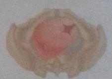
A Occipitossacro.
B Occipitoposterior direito.
C Occipitoanterior direito.
D Occipitotransverso esquerdo.
E Occipitotransverso direito.
Questão 101 · Pontos de ref erência da apresentação f etal · Avaliação da estática f etal · 4000117417Na apresentação fetal cefálica fletida, qual número mostra o ponto de referência fetal?
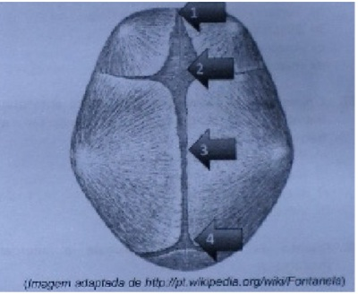
A 1.
B 2.
C 3.
D 4.
Questão 102 · Ginecóide · Morf ologia da bacia · 4000116841A classificação dos tipos de bacia por meio de estudos radiológicos leva em consideração a importância prática das alterações das bacias no prognóstico do parto. Assinale o tipo de bacia feminina mais comum e que apresenta melhor prognóstico para o parto vaginal.
A Androide.
B Ginecoide.
C Antropoide.
D Platipeloide.
Questão 103 · Variedade de posição · 4000105230Durante a avaliação da estática fetal, constatou-se que a variedade de posição era OEA. Sobre esta nomenclatura, é INCORRETO dizer que:
A O ponto de referência fetal é a fontanela bregmática.
B É uma cefálica fletida.
C A linha de orientação é a sutura sagital.
D O ponto de referência materno é a iminência iliopectínea.
E A posição é esquerda e a situação é longitudinal.
Questão 104 · Apresentação · Variedade de posição · 4000095537Primigesta admitida em trabalho de parto apresenta ao exame de toque vaginal cervicodilatação de 8 cm, bolsa rota, feto em apresentação cefálica, bregma na direção da articulação sacroilíaca direita.Trata-se de uma apresentação cefálica defletida de:
A 2° grau; bregma esquerda anterior.
B 1° grau; occipto esquerda anterior.
C 2° grau; bregma; direita posterior.
D 1° grau; bregma direita posterior.
Questão 105 · Estreito superior · Bacia obstétrica trajeto duro · 4000095529As medidas da conjugata vera anatômica, conjugata vera obstétrica e conjugata diagonalis são respectivamente:
A 12 cm; 10,5 cm e 11 cm.
B 11 cm; 10,5 cm e 12 cm.
C 11 cm; 12 cm e 10,5 cm.
D 10,5 cm; 11 cm e 12 cm.
Questão 106 · Def inição dos principais conceitos · Avaliação da estática f etal · 4000075774Gestante a termo, em trabalho de parto no nal do segundo período. O parâmetro da estática fetal que NÃO se consegue avaliar ao toque é:
A Atitude.
B Apresentação.
C Variedade de posição.
D Altura da apresentação.
Questão 107 · Estática f etal · 4000062446Na estática fetal, analisam-se as relações do produto conceptual com a bacia e o útero maternos. Em relação a esses conhecimentos, assinale a alternativa correta:
A A apresentação pélvica pode ser completa (apresentação de nádegas) ou incompleta (modo de joelhos).
B Posição é a relação entre os grandes eixos longitudinais fetal e uterino.
C Na posição occipito-esquerda anterior o bregma corresponde com o estreito superior esquerda.
D Apresentação de 1° grau é chamada bregmática, de 2° grau de face e a de 3° grau de fronte.
E O critério de De Lee consideranda o diâmetro biespinha ciática ou linha interespinhosa como plano zero.
Questão 108 · Cef álica · 4000059638No acompanhamento do trabalho de parto, situação longitudinal, apresentação cefálica de etida de segundo grau ou fronte indicam o ponto de referência, a linha de orientação e o símbolo utilizados, respectivamente:
A Glabela, linha metópica e N.
B Bregma, linha facial e B.
C Glabela, linha facial e N.
D Mento, sutura sagitometópica e B.
Questão 109 · Cef álica · 4000054999Na apresentação cefálica etida os maiores diamêtros da cabeça fetal são o biparietal e o suboccipitobregmático que medem:
A 8 cm;
B 9,5 cm;
C 11 cm;
D 12 cm;
E 13,5 cm.
Questão 110 · Cef álica · 4000044459A maior circunferência da cabeça fetal é:
A Occipital.
B Occipitomentoniana.
C Suboccipitobregmática.
D Suboccipitofrontal.
E Biparietal.
Questão 111 · Bacia obstétrica e pelvimetria · 4000044449Quanto aos diâmetros da bacia obstétrica, é correto afirmar:
A O conjugata vera obstétrico mede 9,5cm e vai do promontório até a face interna do pube.
B O conjugata diagonális não é um recurso clínico para pelvimetria e mede em torno de 12cm.
C O diâmetro coccige-púbico, que mede 10,5 cm, é substituído pelo subsacro- subpúbico, com 13 cm.
D Os diâmetros oblíquos vão da articulação sacroilíaca de um lado até a linha inominada do lado oposto.
E O conjugata exitus mede 10,5 cm.
Questão 112 · Pelvimetria · 4000040009A conformação da pelve feminina pode facilitar a passagem do concepto durante o trabalho de parto. Considerando-se a pelve, a conjugata que pode ser medida no toque vaginal é a:
A Conjugata vera anatômica.
B Conjugata vera obstétrica.
C Conjugata diagonalis.
D Conjugata exitus.
E Conjugata obstrétrica.
Questão 113 · Estreito superior · 4000022207Assinale a alternativa que identifica precisamente as referências anatômicas dos principais diâmetros da bacia obstétrica:
A a conjugata vera anatômica representa referência do estreito inferior da bacia e mede 12cm
B o diâmetro sagital posterior é referência do estreito médio da bacia
C o diâmetro bi-isquiático representa o estreito inferior da bacia obstétrica
D a conjugata vera obstétrica é o diâmetro promontopúbico mínimo do estreito superior da bacia
E o diâmetro sagital posterior é importante referência do estreito médio da bacia, também chamado conjugata veraanatômica
Questão 114 · Avaliação do estreito superior · 4000022194O diâmetro anteroposterior do estreito superior da pelve materna, que representa a menor distância entre o promontório do sacro e a sínfise púbica, é denominado:
A conjugata vera anatômica
B conjugata vera obstétrica
C 2º plano de Hodge
D conjugatadiagonalis
E 1º plano de Hodge
Questão 115 · Avaliação da estática f etal · 4000020752A figura a seguir representa um feto em situação longitudinal, com apresentação pélvica completa. A variedade de posição é sacroilíaca:
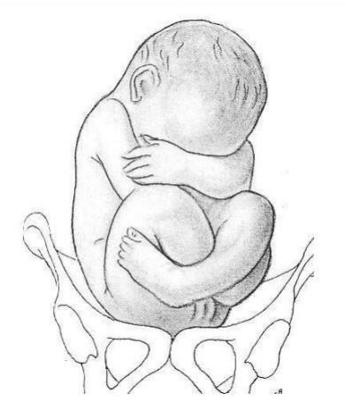
A esquerda posterior.
B direita posterior.
C direita transversa.
D esquerda anterior.
Questão 116 · Avaliação do estreito superior · 4000020307A figura a seguir representa o exame físico da pelve óssea de uma gestante em trabalho de parto. Esse exame tem o objetivo de verificar a possibilidade de parto via vaginal. Qual é o diâmetro aferido?
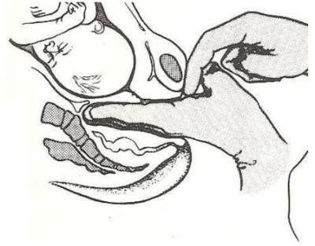
A Conjugado verdadeiro anatômico.
B Conjugado verdadeiro obstétrico.
C Conjugado diagonal.
D Interespinhoso.
Questão 117 · Morf ologia da bacia · 4000014717Existem 4 tipos de bacia obstétrica que são classificadas de acordo com o formato do estreito superior e leva-se em consideração no prognóstico do parto. Qual destas afirmações é VERDADEIRA em relação a essas bacias obstétricas?
A A bacia ginecoide: bacia dos macacos, corresponde a 25% dos casos, tem maiorchance de distócia no estreito superior.
B A bacia androide: bacia masculina, corresponde a 20% dos casos, é o pior tipo debacia, há aumento de incidência de obliquas posteriores e chance crescente de distóciacom a progressão da apresentação.
C A bacia platipeloide: bacia feminina, corresponde a 50% dos casos, tem melhor prognóstico para o parto vaginal.
D A bacia antropoide: bacia achatada, corresponde a 5% dos casos, a insinuação demaneira geral, ocorre na variedade de posição transversa, o prognóstico de parto é bom.
Questão 118 · Estreito superior · 4000014690Os estreitos, bacia obstétrica, possuem os diâmetros conjugados no seu estreito superior, qual das a rmativas é VERDADEIRA no que se relaciona a estes conjugados?
A O conjugado diagonal mede 12 centímetros e vai da borda inferior da sínfise púbica até o promontório.
B O conjugado verdadeiro (obstétrico) mede 12 centímetros e vai do promontório até a borda superior da sínfise púbica.
C O conjugado anatômico mede 10 cm e vai do promontório até a borda inferior da sínfise púbica.
D O conjugado verdadeiro (obstétrico) mede 11 cm e vai do promontório ao meio da borda superior da sínfise púbica.
Questão 119 · Posição · 4000012250Paciente gestante de 38 semanas, em seguimento pré-natal de rotina na Unidade Básica de Saúde da Família, foi examinada pelo pro ssional pré- natalista que evidenciou os seguintes achados: dorso fetal do lado direito do abdome materno, polo cefálico em contato com o estreito superior da bacia. Ante o exame descrito, qual a posição fetal?
A Direita.
B Oblíqua.
C Cefálica.
D Longitudinal.
Questão 120 · Bacia obstétrica e pelvimetria · 4000000224Com relação à pelve feminina, assinale a alternativa INCORRETA: Respostas: 1 12 23 34 45 56 67 78 89 100 111
A O estreito superior da pequena bacia é delimitado por uma linha imaginária que vai da borda superior da sínfise púbica ao promontório.
B No estreito superior da pequena bacia, o diâmetro transverso é menor que o anteroposterior.
C Durante a passagem do feto pelo canal de parto, o segmento mais difícil é o polo cefálico.
D É constituída de partes ósseas, músculos e aponeuroses.
E Ao examinarmos uma bacia, durante o exame de toque, os pontos que devemos observar são o promontório, as espinhas ilíacas e o ângulo subpúbico.